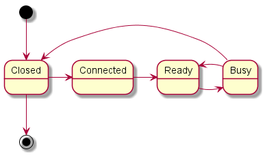
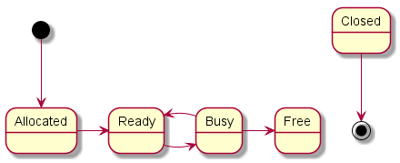
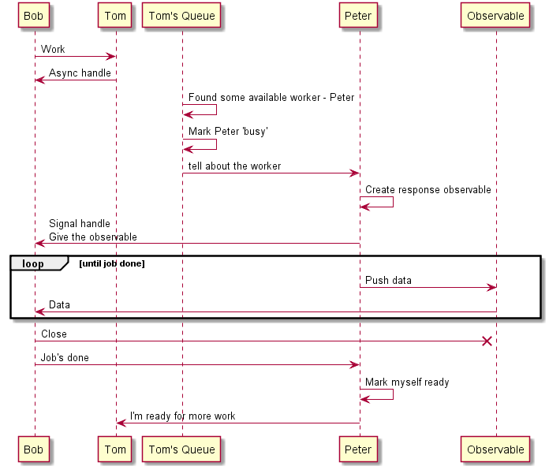

Peers
This is the first of the tree modules that form the Peer-to-peer layer. It is also the lowest, i.e. the closest to the network layer and the farthest from the business logic.
A peer is our side of the communication channel with a remote node of the Bitcoin network. It is responsible for handling the encoding/decoding and the transmission of messages with a single remote node. A peer is constructed with a unique id and bound to single node. If the other side is not responsive or disconnects, the peer gets evicted. The tracker Tom fires Peter. Even if Peter comes back with a response later, Tom will disregard it.
1:
|
module Peer |
The state machines
A Peer goes through several steps as indicated by PeerState. Closed is its initial and final state.
Connected means that it has connected to a remote node but hasn't gone through the handshake (where nodes exchange
version information). A Peer is Ready when it can accept a command from Tom because it is not working already. Peers only
work on one thing at a time and when they work they switch to Busy.

1:
|
type PeerState = Connected | Ready | Busy | Closed |
Tom keeps track of the peers as well but its view is somewhat different. It doesn't care about the details of the inner workings
of Peter, whether he has shaken hands or not. For Tom, a peer is Allocated when he has hired him, Ready or Busy for the same
reasons and Free when Tom has decided that he no longer needs Peter's services.

1:
|
type TrackerPeerState = Allocated | Ready | Busy | Free |
Busy/Ready states control the allocation of resources. Tom does not know exactly how much work is done by Peter. Neither does he know the nature of the work. It is controlled by whoever requested the work. Tom's responsibility is limited to finding a peer for Bob after that Peter and Bob talk directly. The Busy and Ready state are present in both Tom and Peter. Because they are different actors, there is no guarantee that these states will be synchronized. If Tom marks Peter as busy and then sends a message to Peter, Peter is not yet busy since he hasn't received the message yet. It is normal but when Peter finishes his work and becomes available again, the reverse must happen. He must set his state to ready before he notifies Tom otherwise Tom could send him work before he becomes ready. Essentially, because work comes from Tom, it is ok if Tom thinks that Peter is busy when he is not, but it is bad if Tom thinks Peter is available when he is not.

A holder for the incoming and outgoing channels from and to the remote node
1: 2: 3: 4: 5: 6: 7: 8: 9: 10: 11: 12: 13: 14: 15: 16: 17: 18: |
type PeerQueues(stream: NetworkStream) = let fromPeer = new Subject<BitcoinMessage>() let toPeer = new Subject<BitcoinMessage>() interface IDisposable with override x.Dispose() = fromPeer.Dispose() toPeer.Dispose() stream.Close() member x.From with get() = fromPeer member x.To with get() = toPeer type IPeer = abstract Id: int // the unique peer id abstract Ready: unit -> unit // call this to mark this peer ready. Used by Bob abstract Bad: unit -> unit // this peer behaved badly abstract Target: IPEndPoint // the address of the remote node |
Commands
The communication queues have to be set up before they are used and their types must be provided. Because F# does not have forward declarations all the commands are listed here even if they are used only later.
1: 2: 3: 4: 5: 6: 7: 8: 9: 10: 11: 12: 13: 14: 15: 16: 17: 18: 19: 20: 21: 22: 23: 24: 25: 26: 27: 28: 29: 30: 31: 32: 33: 34: 35: 36: 37: 38: 39: |
// Commands that the Peer can receive type PeerCommand = | Open of target: IPEndPoint * tip: BlockHeader | OpenStream of stream: NetworkStream * remote: IPEndPoint * tip: BlockHeader | Handshaked | Execute of message: BitcoinMessage | GetHeaders of gh: GetHeaders * task: TaskCompletionSource<IObservable<Headers>> * IPeer | GetBlocks of gd: GetData * task: TaskCompletionSource<IPeer * IObservable<Block * byte[]>> | GetData of gd: GetData | SetReady | Close | Closed | UpdateScore of score: int // Commands that the Tracker (Tom) can receive type TrackerCommand = | GetPeers | Connect of target: IPEndPoint | IncomingConnection of stream: NetworkStream * target: IPEndPoint | SetReady of id: int | Close of int | BitcoinMessage of message: BitcoinMessage | Command of command: PeerCommand | SetTip of tip: BlockHeader // Commands for Bob type BlockchainCommand = | GetBlock of InvEntry list * Subject<BitcoinMessage> | GetHeaders of GetHeaders * Subject<BitcoinMessage> | Catchup of IPeer * byte[] | Ping of Ping * Subject<BitcoinMessage> // Commands for the memory pool - the transactions that haven't been confirmed yet type MempoolCommand = | Revalidate of int * seq<Tx[]> | Tx of Tx | Inv of InvVector * Subject<PeerCommand> | GetTx of InvEntry list * Subject<BitcoinMessage> | Mempool of Subject<BitcoinMessage> |
Finally the queues themselves
1: 2: 3: |
let blockchainIncoming = new Subject<BlockchainCommand>() let trackerIncoming = new Subject<TrackerCommand>() let mempoolIncoming = new Subject<MempoolCommand>() |
The Peer implementation
The peer's internal state
The peer changes its command handler as it changes state. Though a common pattern in actor frameworks, I have to emulate it because RX is not an actor framework. When an actor receives a message, a handler processes it and modifies the actor's internal state. Optionally, the handler can change for the subsequent messages.
In the case of the peer, the command handler changes between the setup phase and the running phase, and once again during the running phase and the teardown phase. During the first and final phases, the peer will not process user requests.
1: 2: 3: 4: 5: 6: 7: 8: 9: 10: 11: 12: |
type PeerData = { Queues: PeerQueues option State: PeerState Score: int CommandHandler: PeerData -> PeerCommand -> PeerData } type Peer(id: int) as self = let disposable = new CompositeDisposable() let mutable target: IPEndPoint = null let scheduler = new EventLoopScheduler() // A dedicated thread per peer but peers could share threads too |
Peers take input from 3 distinct sources
- commands from the Tracker
- header messages from the remote node
- block messages from the remote node
1: 2: 3: |
let incoming = new Subject<PeerCommand>()
let headersIncoming = new Subject<Headers>()
let blockIncoming = new Subject<Block * byte[]>()
|
The workloop takes a network stream and continually grabs data from it and delivers them to the Observable.
1: 2: 3: 4: 5: 6: 7: 8: 9: 10: 11: 12: 13: 14: 15: |
let workLoop(stream: NetworkStream) =
let buffer: byte[] = Array.zeroCreate 1000000 // network buffer
let tf = new TaskFactory()
let task() =
let t =
tf.FromAsync<byte []>(
(fun cb (state: obj) -> stream.BeginRead(buffer, 0, buffer.Length, cb, state)),
(fun res ->
let c = stream.EndRead(res)
if c = 0 then // When the stream is closed, the read returns 0 byte
raise (new SocketException())
buffer.[0..c-1]),
null)
t.ToObservable() // a task that grabs one read asynchronously
Observable.Repeat<byte[]>(Observable.Defer(task)) // Keep doing the same task until the stream closes
|
Helper functions to change the state of the peer. These functions work asynchronously and can be called from any thread.
1: 2: 3: 4: 5: 6: 7: 8: |
let readyPeer() =
incoming.OnNext(PeerCommand.SetReady)
let closePeer() =
incoming.OnNext(PeerCommand.Close)
let badPeer() =
incoming.OnNext(UpdateScore -100) // lose 100 points - the banscore is not implemented yet
|
Another helper function that sends a message out and return an empty observable. By having it as an observable, the sending is part of the time out.
1: 2: 3: 4: 5: 6: |
let sendMessageObs (peerQueues: PeerQueues) (message: BitcoinMessage) =
Observable.Defer(
fun () ->
peerQueues.To.OnNext(message)
Observable.Empty()
)
|
Send the message out and catch any exception due to a communication problem with the remote node. It could have closed. The network stream has a WriteTimeOut set and will throw an exception if the message couldn't be sent during the allocated time. At this point, if an exception is raised I close the peer because there isn't much chance of making progress later.
1: 2: 3: 4: 5: 6: 7: 8: |
let sendMessage (stream: NetworkStream) (message: BitcoinMessage)=
let messageBytes = message.ToByteArray()
try
stream.Write(messageBytes, 0, messageBytes.Length)
with
| e ->
logger.DebugF "Cannot send message to peer"
closePeer()
|
processMessage handles messages incoming from the remote node. Generally speaking, it parses the payload of the message
and routes it to the appropriate queue.
1: 2: 3: 4: 5: 6: 7: 8: 9: 10: 11: 12: 13: 14: 15: 16: 17: 18: 19: 20: 21: 22: 23: 24: 25: 26: 27: 28: 29: 30: 31: 32: 33: 34: 35: 36: 37: 38: 39: 40: 41: |
let processMessage (peerQueues: PeerQueues) (message: BitcoinMessage) =
let command = message.Command
match command with
| "version"
| "verack" ->
peerQueues.From.OnNext(message)
| "getaddr" -> ignore()
| "getdata" ->
let gd = message.ParsePayload() :?> GetData
mempoolIncoming.OnNext(GetTx (gd.Invs |> List.filter (fun inv -> inv.Type = txInvType), peerQueues.To))
blockchainIncoming.OnNext(GetBlock (gd.Invs |> List.filter (fun inv -> inv.Type = blockInvType), peerQueues.To))
| "getheaders" ->
let gh = message.ParsePayload() :?> GetHeaders
blockchainIncoming.OnNext(GetHeaders (gh, peerQueues.To))
| "addr" ->
let addr = message.ParsePayload() :?> Addr
addrTopic.OnNext(addr)
| "headers" ->
let headers = message.ParsePayload() :?> Headers
headersIncoming.OnNext headers
| "block" ->
let block = message.ParsePayload() :?> Block
blockIncoming.OnNext (block, message.Payload)
| "inv" ->
let inv = message.ParsePayload() :?> InvVector
if inv.Invs.IsEmpty then ignore() // empty inv
elif inv.Invs.Length > 1 || inv.Invs.[0].Type <> blockInvType then // many invs or not a block inv
mempoolIncoming.OnNext(Inv(inv, incoming)) // send to mempool
elif inv.Invs.Length = 1 && inv.Invs.[0].Type = blockInvType then // a block inv, send to blockchain
logger.DebugF "Catchup requested for %d %s" id (hashToHex inv.Invs.[0].Hash)
blockchainIncoming.OnNext(Catchup(self, inv.Invs.[0].Hash))
| "tx" ->
let tx = message.ParsePayload() :?> Tx
mempoolIncoming.OnNext(Tx tx)
| "ping" ->
let ping = message.ParsePayload() :?> Ping // send to blockchain because tests use pings to sync with catchup
blockchainIncoming.OnNext(BlockchainCommand.Ping(ping, peerQueues.To))
| "mempool" ->
let mempool = message.ParsePayload() :?> Mempool
mempoolIncoming.OnNext(MempoolCommand.Mempool peerQueues.To)
| _ -> ignore()
|
processConnection is the handler active during connection. It replies to Open, OpenStream, Handshake and Closing.
Every handler needs to support Closing because it may happen at any time. The other messages are specific to the state of the peer.
1: 2: 3: 4: 5: 6: 7: 8: 9: 10: 11: 12: 13: 14: 15: 16: 17: 18: 19: 20: 21: 22: 23: 24: 25: 26: 27: 28: 29: 30: 31: 32: 33: 34: 35: 36: 37: 38: 39: 40: 41: 42: 43: 44: 45: 46: 47: 48: 49: 50: 51: 52: 53: 54: 55: 56: 57: 58: 59: 60: 61: 62: 63: 64: 65: 66: 67: 68: 69: 70: 71: 72: 73: 74: 75: 76: 77: 78: 79: 80: 81: 82: 83: 84: 85: |
let rec processConnection (data: PeerData) (command: PeerCommand): PeerData =
match command with
| Open (t, tip) -> // Got a outgoing connection request
target <- t
logger.DebugF "Connect to %s" (target.ToString())
let connect =
async {
let client = new Sockets.TcpClient()
do! Async.FromBeginEnd(
target,
(fun (target, cb, state) -> client.BeginConnect(target.Address, target.Port, cb, state)),
client.EndConnect)
let stream = client.GetStream()
return OpenStream (stream, target, tip)
}
// Connect to the node and bail out if it fails or the timeout expires
Observable.Timeout(Async.AsObservable connect, connectTimeout).ObserveOn(scheduler).Subscribe(
onNext = (fun c -> incoming.OnNext c), // If connected, grab the stream
onError = (fun ex ->
logger.DebugF "Connect failed> %A %s" t (ex.ToString())
closePeer())
) |> ignore
data
| OpenStream (stream, t, tip) -> // Got a stream from a successful connection (in or out)
logger.DebugF "OpenStream %A" t
target <- t
stream.WriteTimeout <- int(commandTimeout.Ticks / TimeSpan.TicksPerMillisecond)
// Setup the queues and the network to bitcoin message parser
// Observables are created but not subscribed to, so in fact nothing is consumed from the stream yet
let peerQueues = new PeerQueues(stream)
let parser = new BitcoinMessageParser(workLoop(stream))
// Subscribe the outgoing queue, it's ready to send out messages
disposable.Add(peerQueues.To.Subscribe(onNext = (fun m -> sendMessage stream m), onError = (fun e -> closePeer())))
disposable.Add(peerQueues)
disposable.Add(stream)
// Prepare and send out my version message
let version = Version.Create(SystemClock.Instance.Now, target, NetworkAddr.MyAddress, int64(random.Next()), "Satoshi YOLO 1.0", tip.Height, 1uy)
peerQueues.To.OnNext(new BitcoinMessage("version", version.ToByteArray()))
// The handshake observable waits for the verack and the version response from the other side. When both parties have
// exchanged their version/verack, it will deliver a single event "Handshaked"
let handshakeObs =
peerQueues.From.ObserveOn(scheduler)
.Scan((false, false), fun (versionReceived: bool, verackReceived: bool) (m: BitcoinMessage) ->
logger.DebugF "HS> %A" m
match m.Command with
| "version" ->
peerQueues.To.OnNext(new BitcoinMessage("verack", Array.empty))
(true, verackReceived)
| "verack" -> (versionReceived, true)
| _ -> (versionReceived, verackReceived))
.SkipWhile(fun (versionReceived, verackReceived) -> not versionReceived || not verackReceived)
.Take(1)
.Select(fun _ -> Handshaked)
// Give that observable a certain time to finish
Observable.Timeout(handshakeObs, handshakeTimeout).Subscribe(
onNext = (fun c ->
logger.DebugF "%A Handshaked" t
incoming.OnNext c),
onError = (fun ex ->
logger.DebugF "Handshake failed> %A %s" target (ex.ToString())
closePeer())
) |> ignore
// Finally subscribe and start consuming the responses from the remote side
// Any exception closes the peer
disposable.Add(parser.BitcoinMessages.Subscribe(onNext = (fun m -> processMessage peerQueues m), onError = (fun e -> closePeer())))
// But if it goes well,
{ data with Queues = Some(peerQueues) }
| Handshaked ->
// Got the handshake, the peer is ready
trackerIncoming.OnNext (TrackerCommand.SetReady id)
{ data with State = Connected; CommandHandler = processCommand }
| PeerCommand.Close ->
logger.DebugF "Closing %A" target
// Tell the Tracker that the peer is finished but don't leave yet. Tom will do the paperwork and
// give the severance package
trackerIncoming.OnNext(TrackerCommand.Close id)
{ data with CommandHandler = processClosing }
| _ ->
logger.DebugF "Ignoring %A because the peer is not connected" command
data
|
`processCommand is the handler for normal state. The request can be either
- For the remote node. In which case, it's simply forwarded.
- A getheader/getblock. These come from Bob and Bob wants the response directly. The message came with a
TaskCompletionSourcefor an observable. The peer creates the observable and notifies Bob of its availability. - A request for the remote node like getdata. They come from the memory pool.
- or some state management message
1: 2: 3: 4: 5: 6: 7: 8: 9: 10: 11: 12: 13: 14: 15: 16: 17: 18: 19: 20: 21: 22: 23: 24: 25: 26: 27: 28: 29: 30: 31: 32: 33: 34: 35: 36: 37: 38: 39: 40: |
and processCommand (data: PeerData) (command: PeerCommand): PeerData =
let peerQueues = data.Queues.Value
match command with
| Execute message ->
peerQueues.To.OnNext(message)
data
| PeerCommand.GetHeaders (gh, ts, _) ->
let sendObs = sendMessageObs peerQueues (new BitcoinMessage("getheaders", gh.ToByteArray()))
let obs =
Observable
.Timeout(sendObs.Concat(headersIncoming), commandTimeout)
ts.SetResult(obs)
{ data with State = PeerState.Busy }
| GetBlocks (gd, ts) ->
let blocksPending = new HashSet<byte[]>(gd.Invs |> Seq.map(fun inv -> inv.Hash), new HashCompare())
let sendObs = sendMessageObs peerQueues (new BitcoinMessage("getdata", gd.ToByteArray()))
let count = blocksPending.Count
let obs =
Observable
.Timeout(sendObs.Concat(blockIncoming), commandTimeout)
.Where(fun (b, _) -> blocksPending.Contains b.Header.Hash)
.Take(count)
ts.SetResult(self :> IPeer, obs)
{ data with State = PeerState.Busy }
| PeerCommand.SetReady ->
if data.State <> PeerState.Ready then
trackerIncoming.OnNext (TrackerCommand.SetReady id)
{ data with State = PeerState.Ready }
| GetData (gd) ->
let sendObs = sendMessageObs peerQueues (new BitcoinMessage("getdata", gd.ToByteArray()))
Observable.Timeout(sendObs, commandTimeout).Subscribe(onNext = (fun _ -> ignore()), onError = (fun _ -> badPeer())) |> ignore
data
| UpdateScore score ->
let newData = { data with Score = data.Score + score }
if newData.Score <= 0 then incoming.OnNext(PeerCommand.Close)
newData
| PeerCommand.Close ->
logger.DebugF "Closing %A" target
trackerIncoming.OnNext(TrackerCommand.Close id)
{ data with CommandHandler = processClosing }
|
Finally, processClosing handles the cleanup. Tom will not send further requests to this peer but there still may be
outstanding message in the pipeline. They must be cleared gracefully otherwise someone could end up waiting for their
result forever.
1: 2: 3: 4: 5: 6: 7: 8: 9: 10: 11: 12: 13: 14: 15: 16: 17: 18: 19: 20: 21: 22: 23: 24: 25: 26: 27: 28: 29: 30: 31: 32: 33: 34: 35: 36: 37: 38: 39: 40: |
and processClosing (data: PeerData) (command: PeerCommand): PeerData =
match command with
| Closed ->
(self :> IDisposable).Dispose() // Dispose completes the queues
{ data with State = PeerState.Closed; Queues = None; CommandHandler = processConnection }
| PeerCommand.GetHeaders (gh, ts, _) ->
ts.SetResult(Observable.Empty())
data
| GetBlocks (gd, ts) ->
ts.SetResult(self :> IPeer, Observable.Empty())
data
| _ -> data
let initialState = { State = PeerState.Closed; Score = 100; Queues = None; CommandHandler = processConnection }
let runHandler (data: PeerData) (command: PeerCommand) =
// logger.DebugF "PeerCommand> %A" command
data.CommandHandler data command
do
disposable.Add(
incoming
.ObserveOn(scheduler)
.Scan(initialState, new Func<PeerData, PeerCommand, PeerData>(runHandler))
.Subscribe(onNext = (fun _ -> ()), onCompleted = (fun () ->
scheduler.Dispose() // On completion, dispose of the final resources
disposable.Dispose()
)))
interface IDisposable with
member x.Dispose() =
incoming.OnCompleted()
interface IPeer with
member x.Ready() = readyPeer()
member val Id = id with get
member x.Target with get() = target // For diagnostics only
member x.Bad() = ignore() // TODO: Renable badPeer()
override x.ToString() = sprintf "Peer(%d, %A)" id target
member x.Incoming with get() = incoming
|
Bootstrap from DNS
Clear peers that are older than 3h and do a DNS request to the known seed nodes if the database has less than 1000 peers
1: 2: 3: 4: 5: 6: 7: 8: 9: 10: 11: 12: 13: 14: 15: 16: 17: 18: 19: 20: 21: |
let dropOldPeers() = let dts = DateTime.UtcNow.AddHours(-3.0) Db.dropOldPeers dts Db.resetState() let bootstrapPeers() = async { let now = NodaTime.Instant.FromDateTimeUtc(DateTime.UtcNow) let! entry = Async.AwaitTask(Dns.GetHostEntryAsync("seed.bitnodes.io")) for peer in entry.AddressList do let addr = { Timestamp = int (now.Ticks / NodaConstants.TicksPerSecond); Address = new NetworkAddr(new IPEndPoint(peer.MapToIPv4(), defaultPort)) } Db.updateAddr addr trackerIncoming.OnNext(GetPeers) } |> Async.StartImmediate let initPeers() = dropOldPeers() let peers = Db.getPeers() if peers.Length < 1000 then bootstrapPeers() |
namespace System.Linq
--------------------
namespace Microsoft.FSharp.Linq
from Microsoft.FSharp.Control
type Choice<'T1,'T2> =
| Choice1Of2 of 'T1
| Choice2Of2 of 'T2
Full name: Microsoft.FSharp.Core.Choice<_,_>
--------------------
type Choice<'T1,'T2,'T3> =
| Choice1Of3 of 'T1
| Choice2Of3 of 'T2
| Choice3Of3 of 'T3
Full name: Microsoft.FSharp.Core.Choice<_,_,_>
--------------------
type Choice<'T1,'T2,'T3,'T4> =
| Choice1Of4 of 'T1
| Choice2Of4 of 'T2
| Choice3Of4 of 'T3
| Choice4Of4 of 'T4
Full name: Microsoft.FSharp.Core.Choice<_,_,_,_>
--------------------
type Choice<'T1,'T2,'T3,'T4,'T5> =
| Choice1Of5 of 'T1
| Choice2Of5 of 'T2
| Choice3Of5 of 'T3
| Choice4Of5 of 'T4
| Choice5Of5 of 'T5
Full name: Microsoft.FSharp.Core.Choice<_,_,_,_,_>
--------------------
type Choice<'T1,'T2,'T3,'T4,'T5,'T6> =
| Choice1Of6 of 'T1
| Choice2Of6 of 'T2
| Choice3Of6 of 'T3
| Choice4Of6 of 'T4
| Choice5Of6 of 'T5
| Choice6Of6 of 'T6
Full name: Microsoft.FSharp.Core.Choice<_,_,_,_,_,_>
--------------------
type Choice<'T1,'T2,'T3,'T4,'T5,'T6,'T7> =
| Choice1Of7 of 'T1
| Choice2Of7 of 'T2
| Choice3Of7 of 'T3
| Choice4Of7 of 'T4
| Choice5Of7 of 'T5
| Choice6Of7 of 'T6
| Choice7Of7 of 'T7
Full name: Microsoft.FSharp.Core.Choice<_,_,_,_,_,_,_>
Full name: Peer.defaultPort
| Connected
| Ready
| Busy
| Closed
Full name: Peer.PeerState
| Allocated
| Ready
| Busy
| Free
Full name: Peer.TrackerPeerState
Full name: Peer.GetResult<_>
Full name: Microsoft.FSharp.Core.exn
Full name: Peer.addrTopic
type PeerQueues =
interface IDisposable
new : stream:NetworkStream -> PeerQueues
member From : obj
member To : obj
Full name: Peer.PeerQueues
--------------------
new : stream:NetworkStream -> PeerQueues
type NetworkStream =
inherit Stream
new : socket:Socket -> NetworkStream + 3 overloads
member BeginRead : buffer:byte[] * offset:int * size:int * callback:AsyncCallback * state:obj -> IAsyncResult
member BeginWrite : buffer:byte[] * offset:int * size:int * callback:AsyncCallback * state:obj -> IAsyncResult
member CanRead : bool
member CanSeek : bool
member CanTimeout : bool
member CanWrite : bool
member Close : timeout:int -> unit
member DataAvailable : bool
member EndRead : asyncResult:IAsyncResult -> int
...
Full name: System.Net.Sockets.NetworkStream
--------------------
NetworkStream(socket: Socket) : unit
NetworkStream(socket: Socket, ownsSocket: bool) : unit
NetworkStream(socket: Socket, access: IO.FileAccess) : unit
NetworkStream(socket: Socket, access: IO.FileAccess, ownsSocket: bool) : unit
member Dispose : unit -> unit
Full name: System.IDisposable
Full name: Peer.PeerQueues.Dispose
NetworkStream.Close(timeout: int) : unit
Full name: Peer.PeerQueues.From
Full name: Peer.PeerQueues.To
interface
abstract member Bad : unit -> unit
abstract member Ready : unit -> unit
abstract member Id : int
abstract member Target : IPEndPoint
end
Full name: Peer.IPeer
Full name: Peer.IPeer.Id
val int : value:'T -> int (requires member op_Explicit)
Full name: Microsoft.FSharp.Core.Operators.int
--------------------
type int = int32
Full name: Microsoft.FSharp.Core.int
--------------------
type int<'Measure> = int
Full name: Microsoft.FSharp.Core.int<_>
Full name: Peer.IPeer.Ready
Full name: Microsoft.FSharp.Core.unit
Full name: Peer.IPeer.Bad
Full name: Peer.IPeer.Target
type IPEndPoint =
inherit EndPoint
new : address:int64 * port:int -> IPEndPoint + 1 overload
member Address : IPAddress with get, set
member AddressFamily : AddressFamily
member Create : socketAddress:SocketAddress -> EndPoint
member Equals : comparand:obj -> bool
member GetHashCode : unit -> int
member Port : int with get, set
member Serialize : unit -> SocketAddress
member ToString : unit -> string
static val MinPort : int
...
Full name: System.Net.IPEndPoint
--------------------
IPEndPoint(address: int64, port: int) : unit
IPEndPoint(address: IPAddress, port: int) : unit
| Open of target: IPEndPoint * tip: obj
| OpenStream of stream: NetworkStream * remote: IPEndPoint * tip: obj
| Handshaked
| Execute of message: obj
| GetHeaders of gh: obj * task: obj * IPeer
| GetBlocks of gd: obj * task: TaskCompletionSource<IPeer * IObservable<obj * byte []>>
| GetData of gd: obj
| SetReady
| Close
| Closed
...
Full name: Peer.PeerCommand
type TaskCompletionSource<'TResult> =
new : unit -> TaskCompletionSource<'TResult> + 3 overloads
member SetCanceled : unit -> unit
member SetException : exception:Exception -> unit + 1 overload
member SetResult : result:'TResult -> unit
member Task : Task<'TResult>
member TrySetCanceled : unit -> bool
member TrySetException : exception:Exception -> bool + 1 overload
member TrySetResult : result:'TResult -> bool
Full name: System.Threading.Tasks.TaskCompletionSource<_>
--------------------
TaskCompletionSource() : unit
TaskCompletionSource(creationOptions: TaskCreationOptions) : unit
TaskCompletionSource(state: obj) : unit
TaskCompletionSource(state: obj, creationOptions: TaskCreationOptions) : unit
member Subscribe : observer:IObserver<'T> -> IDisposable
Full name: System.IObservable<_>
val byte : value:'T -> byte (requires member op_Explicit)
Full name: Microsoft.FSharp.Core.Operators.byte
--------------------
type byte = Byte
Full name: Microsoft.FSharp.Core.byte
| GetPeers
| Connect of target: IPEndPoint
| IncomingConnection of stream: NetworkStream * target: IPEndPoint
| SetReady of id: int
| Close of int
| BitcoinMessage of message: obj
| Command of command: PeerCommand
| SetTip of tip: obj
Full name: Peer.TrackerCommand
Full name: Microsoft.FSharp.Core.Operators.id
| GetBlock of obj * obj
| GetHeaders of obj * obj
| Catchup of IPeer * byte []
| Ping of obj * obj
Full name: Peer.BlockchainCommand
Full name: Microsoft.FSharp.Collections.list<_>
| Revalidate of int * seq<obj []>
| Tx of obj
| Inv of obj * obj
| GetTx of obj * obj
| Mempool of obj
Full name: Peer.MempoolCommand
val seq : sequence:seq<'T> -> seq<'T>
Full name: Microsoft.FSharp.Core.Operators.seq
--------------------
type seq<'T> = IEnumerable<'T>
Full name: Microsoft.FSharp.Collections.seq<_>
Full name: Peer.blockchainIncoming
Full name: Peer.trackerIncoming
Full name: Peer.mempoolIncoming
{Queues: PeerQueues option;
State: PeerState;
Score: int;
CommandHandler: PeerData -> PeerCommand -> PeerData;}
Full name: Peer.PeerData
Full name: Microsoft.FSharp.Core.option<_>
type Peer =
interface IPeer
interface IDisposable
new : id:int -> Peer
override ToString : unit -> string
member Incoming : obj
Full name: Peer.Peer
--------------------
new : id:int -> Peer
member Clone : unit -> obj
member CopyTo : array:Array * index:int -> unit + 1 overload
member GetEnumerator : unit -> IEnumerator
member GetLength : dimension:int -> int
member GetLongLength : dimension:int -> int64
member GetLowerBound : dimension:int -> int
member GetUpperBound : dimension:int -> int
member GetValue : params indices:int[] -> obj + 7 overloads
member Initialize : unit -> unit
member IsFixedSize : bool
...
Full name: System.Array
Full name: Microsoft.FSharp.Collections.Array.zeroCreate
type TaskFactory =
new : unit -> TaskFactory + 4 overloads
member CancellationToken : CancellationToken
member ContinuationOptions : TaskContinuationOptions
member ContinueWhenAll : tasks:Task[] * continuationAction:Action<Task[]> -> Task + 15 overloads
member ContinueWhenAny : tasks:Task[] * continuationAction:Action<Task> -> Task + 15 overloads
member CreationOptions : TaskCreationOptions
member FromAsync : asyncResult:IAsyncResult * endMethod:Action<IAsyncResult> -> Task + 21 overloads
member Scheduler : TaskScheduler
member StartNew : action:Action -> Task + 15 overloads
Full name: System.Threading.Tasks.TaskFactory
--------------------
type TaskFactory<'TResult> =
new : unit -> TaskFactory<'TResult> + 4 overloads
member CancellationToken : CancellationToken
member ContinuationOptions : TaskContinuationOptions
member ContinueWhenAll : tasks:Task[] * continuationFunction:Func<Task[], 'TResult> -> Task<'TResult> + 7 overloads
member ContinueWhenAny : tasks:Task[] * continuationFunction:Func<Task, 'TResult> -> Task<'TResult> + 7 overloads
member CreationOptions : TaskCreationOptions
member FromAsync : asyncResult:IAsyncResult * endMethod:Func<IAsyncResult, 'TResult> -> Task<'TResult> + 10 overloads
member Scheduler : TaskScheduler
member StartNew : function:Func<'TResult> -> Task<'TResult> + 7 overloads
Full name: System.Threading.Tasks.TaskFactory<_>
--------------------
TaskFactory() : unit
TaskFactory(cancellationToken: CancellationToken) : unit
TaskFactory(scheduler: TaskScheduler) : unit
TaskFactory(creationOptions: TaskCreationOptions, continuationOptions: TaskContinuationOptions) : unit
TaskFactory(cancellationToken: CancellationToken, creationOptions: TaskCreationOptions, continuationOptions: TaskContinuationOptions, scheduler: TaskScheduler) : unit
--------------------
TaskFactory() : unit
TaskFactory(cancellationToken: CancellationToken) : unit
TaskFactory(scheduler: TaskScheduler) : unit
TaskFactory(creationOptions: TaskCreationOptions, continuationOptions: TaskContinuationOptions) : unit
TaskFactory(cancellationToken: CancellationToken, creationOptions: TaskCreationOptions, continuationOptions: TaskContinuationOptions, scheduler: TaskScheduler) : unit
(+0 other overloads)
TaskFactory.FromAsync(asyncResult: IAsyncResult, endMethod: Action<IAsyncResult>) : Task
(+0 other overloads)
TaskFactory.FromAsync<'TResult>(beginMethod: Func<AsyncCallback,obj,IAsyncResult>, endMethod: Func<IAsyncResult,'TResult>, state: obj) : Task<'TResult>
(+0 other overloads)
TaskFactory.FromAsync<'TResult>(asyncResult: IAsyncResult, endMethod: Func<IAsyncResult,'TResult>, creationOptions: TaskCreationOptions) : Task<'TResult>
(+0 other overloads)
TaskFactory.FromAsync(beginMethod: Func<AsyncCallback,obj,IAsyncResult>, endMethod: Action<IAsyncResult>, state: obj) : Task
(+0 other overloads)
TaskFactory.FromAsync(asyncResult: IAsyncResult, endMethod: Action<IAsyncResult>, creationOptions: TaskCreationOptions) : Task
(+0 other overloads)
TaskFactory.FromAsync<'TArg1,'TResult>(beginMethod: Func<'TArg1,AsyncCallback,obj,IAsyncResult>, endMethod: Func<IAsyncResult,'TResult>, arg1: 'TArg1, state: obj) : Task<'TResult>
(+0 other overloads)
TaskFactory.FromAsync<'TResult>(beginMethod: Func<AsyncCallback,obj,IAsyncResult>, endMethod: Func<IAsyncResult,'TResult>, state: obj, creationOptions: TaskCreationOptions) : Task<'TResult>
(+0 other overloads)
TaskFactory.FromAsync<'TResult>(asyncResult: IAsyncResult, endMethod: Func<IAsyncResult,'TResult>, creationOptions: TaskCreationOptions, scheduler: TaskScheduler) : Task<'TResult>
(+0 other overloads)
TaskFactory.FromAsync<'TArg1>(beginMethod: Func<'TArg1,AsyncCallback,obj,IAsyncResult>, endMethod: Action<IAsyncResult>, arg1: 'TArg1, state: obj) : Task
(+0 other overloads)
Full name: Microsoft.FSharp.Core.obj
Full name: Microsoft.FSharp.Core.Operators.raise
type SocketException =
inherit Win32Exception
new : unit -> SocketException + 1 overload
member ErrorCode : int
member Message : string
member SocketErrorCode : SocketError
Full name: System.Net.Sockets.SocketException
--------------------
SocketException() : unit
SocketException(errorCode: int) : unit
Full name: Microsoft.FSharp.Core.Operators.ignore
type List<'T> =
new : unit -> List<'T> + 2 overloads
member Add : item:'T -> unit
member AddRange : collection:IEnumerable<'T> -> unit
member AsReadOnly : unit -> ReadOnlyCollection<'T>
member BinarySearch : item:'T -> int + 2 overloads
member Capacity : int with get, set
member Clear : unit -> unit
member Contains : item:'T -> bool
member ConvertAll<'TOutput> : converter:Converter<'T, 'TOutput> -> List<'TOutput>
member CopyTo : array:'T[] -> unit + 2 overloads
...
nested type Enumerator
Full name: System.Collections.Generic.List<_>
--------------------
List() : unit
List(capacity: int) : unit
List(collection: IEnumerable<'T>) : unit
Full name: Microsoft.FSharp.Collections.List.filter
inherit MemberInfo
member Assembly : Assembly
member AssemblyQualifiedName : string
member Attributes : TypeAttributes
member BaseType : Type
member ContainsGenericParameters : bool
member DeclaringMethod : MethodBase
member DeclaringType : Type
member Equals : o:obj -> bool + 1 overload
member FindInterfaces : filter:TypeFilter * filterCriteria:obj -> Type[]
member FindMembers : memberType:MemberTypes * bindingAttr:BindingFlags * filter:MemberFilter * filterCriteria:obj -> MemberInfo[]
...
Full name: System.Type
Full name: Microsoft.FSharp.Core.ExtraTopLevelOperators.async
type TcpClient =
new : unit -> TcpClient + 3 overloads
member Available : int
member BeginConnect : host:string * port:int * requestCallback:AsyncCallback * state:obj -> IAsyncResult + 2 overloads
member Client : Socket with get, set
member Close : unit -> unit
member Connect : remoteEP:IPEndPoint -> unit + 3 overloads
member Connected : bool
member EndConnect : asyncResult:IAsyncResult -> unit
member ExclusiveAddressUse : bool with get, set
member GetStream : unit -> NetworkStream
...
Full name: System.Net.Sockets.TcpClient
--------------------
TcpClient() : unit
TcpClient(localEP: IPEndPoint) : unit
TcpClient(family: AddressFamily) : unit
TcpClient(hostname: string, port: int) : unit
type Async
static member AsBeginEnd : computation:('Arg -> Async<'T>) -> ('Arg * AsyncCallback * obj -> IAsyncResult) * (IAsyncResult -> 'T) * (IAsyncResult -> unit)
static member AwaitEvent : event:IEvent<'Del,'T> * ?cancelAction:(unit -> unit) -> Async<'T> (requires delegate and 'Del :> Delegate)
static member AwaitIAsyncResult : iar:IAsyncResult * ?millisecondsTimeout:int -> Async<bool>
static member AwaitTask : task:Task<'T> -> Async<'T>
static member AwaitWaitHandle : waitHandle:WaitHandle * ?millisecondsTimeout:int -> Async<bool>
static member CancelDefaultToken : unit -> unit
static member Catch : computation:Async<'T> -> Async<Choice<'T,exn>>
static member FromBeginEnd : beginAction:(AsyncCallback * obj -> IAsyncResult) * endAction:(IAsyncResult -> 'T) * ?cancelAction:(unit -> unit) -> Async<'T>
static member FromBeginEnd : arg:'Arg1 * beginAction:('Arg1 * AsyncCallback * obj -> IAsyncResult) * endAction:(IAsyncResult -> 'T) * ?cancelAction:(unit -> unit) -> Async<'T>
static member FromBeginEnd : arg1:'Arg1 * arg2:'Arg2 * beginAction:('Arg1 * 'Arg2 * AsyncCallback * obj -> IAsyncResult) * endAction:(IAsyncResult -> 'T) * ?cancelAction:(unit -> unit) -> Async<'T>
static member FromBeginEnd : arg1:'Arg1 * arg2:'Arg2 * arg3:'Arg3 * beginAction:('Arg1 * 'Arg2 * 'Arg3 * AsyncCallback * obj -> IAsyncResult) * endAction:(IAsyncResult -> 'T) * ?cancelAction:(unit -> unit) -> Async<'T>
static member FromContinuations : callback:(('T -> unit) * (exn -> unit) * (OperationCanceledException -> unit) -> unit) -> Async<'T>
static member Ignore : computation:Async<'T> -> Async<unit>
static member OnCancel : interruption:(unit -> unit) -> Async<IDisposable>
static member Parallel : computations:seq<Async<'T>> -> Async<'T []>
static member RunSynchronously : computation:Async<'T> * ?timeout:int * ?cancellationToken:CancellationToken -> 'T
static member Sleep : millisecondsDueTime:int -> Async<unit>
static member Start : computation:Async<unit> * ?cancellationToken:CancellationToken -> unit
static member StartAsTask : computation:Async<'T> * ?taskCreationOptions:TaskCreationOptions * ?cancellationToken:CancellationToken -> Task<'T>
static member StartChild : computation:Async<'T> * ?millisecondsTimeout:int -> Async<Async<'T>>
static member StartChildAsTask : computation:Async<'T> * ?taskCreationOptions:TaskCreationOptions -> Async<Task<'T>>
static member StartImmediate : computation:Async<unit> * ?cancellationToken:CancellationToken -> unit
static member StartWithContinuations : computation:Async<'T> * continuation:('T -> unit) * exceptionContinuation:(exn -> unit) * cancellationContinuation:(OperationCanceledException -> unit) * ?cancellationToken:CancellationToken -> unit
static member SwitchToContext : syncContext:SynchronizationContext -> Async<unit>
static member SwitchToNewThread : unit -> Async<unit>
static member SwitchToThreadPool : unit -> Async<unit>
static member TryCancelled : computation:Async<'T> * compensation:(OperationCanceledException -> unit) -> Async<'T>
static member CancellationToken : Async<CancellationToken>
static member DefaultCancellationToken : CancellationToken
Full name: Microsoft.FSharp.Control.Async
--------------------
type Async<'T>
Full name: Microsoft.FSharp.Control.Async<_>
static member Async.FromBeginEnd : arg:'Arg1 * beginAction:('Arg1 * AsyncCallback * obj -> IAsyncResult) * endAction:(IAsyncResult -> 'T) * ?cancelAction:(unit -> unit) -> Async<'T>
static member Async.FromBeginEnd : arg1:'Arg1 * arg2:'Arg2 * beginAction:('Arg1 * 'Arg2 * AsyncCallback * obj -> IAsyncResult) * endAction:(IAsyncResult -> 'T) * ?cancelAction:(unit -> unit) -> Async<'T>
static member Async.FromBeginEnd : arg1:'Arg1 * arg2:'Arg2 * arg3:'Arg3 * beginAction:('Arg1 * 'Arg2 * 'Arg3 * AsyncCallback * obj -> IAsyncResult) * endAction:(IAsyncResult -> 'T) * ?cancelAction:(unit -> unit) -> Async<'T>
TcpClient.BeginConnect(address: IPAddress, port: int, requestCallback: AsyncCallback, state: obj) : IAsyncResult
TcpClient.BeginConnect(host: string, port: int, requestCallback: AsyncCallback, state: obj) : IAsyncResult
static val Infinite : int
Full name: System.Threading.Timeout
type TimeSpan =
struct
new : ticks:int64 -> TimeSpan + 3 overloads
member Add : ts:TimeSpan -> TimeSpan
member CompareTo : value:obj -> int + 1 overload
member Days : int
member Duration : unit -> TimeSpan
member Equals : value:obj -> bool + 1 overload
member GetHashCode : unit -> int
member Hours : int
member Milliseconds : int
member Minutes : int
...
end
Full name: System.TimeSpan
--------------------
TimeSpan()
TimeSpan(ticks: int64) : unit
TimeSpan(hours: int, minutes: int, seconds: int) : unit
TimeSpan(days: int, hours: int, minutes: int, seconds: int) : unit
TimeSpan(days: int, hours: int, minutes: int, seconds: int, milliseconds: int) : unit
type Version =
new : unit -> Version + 4 overloads
member Build : int
member Clone : unit -> obj
member CompareTo : version:obj -> int + 1 overload
member Equals : obj:obj -> bool + 1 overload
member GetHashCode : unit -> int
member Major : int
member MajorRevision : int16
member Minor : int
member MinorRevision : int16
...
Full name: System.Version
--------------------
Version() : unit
Version(version: string) : unit
Version(major: int, minor: int) : unit
Version(major: int, minor: int, build: int) : unit
Version(major: int, minor: int, build: int, revision: int) : unit
val int64 : value:'T -> int64 (requires member op_Explicit)
Full name: Microsoft.FSharp.Core.Operators.int64
--------------------
type int64 = Int64
Full name: Microsoft.FSharp.Core.int64
--------------------
type int64<'Measure> = int64
Full name: Microsoft.FSharp.Core.int64<_>
Full name: Microsoft.FSharp.Core.bool
Full name: Microsoft.FSharp.Collections.Array.empty
Full name: Microsoft.FSharp.Core.Operators.not
type HashSet<'T> =
new : unit -> HashSet<'T> + 3 overloads
member Add : item:'T -> bool
member Clear : unit -> unit
member Comparer : IEqualityComparer<'T>
member Contains : item:'T -> bool
member CopyTo : array:'T[] -> unit + 2 overloads
member Count : int
member ExceptWith : other:IEnumerable<'T> -> unit
member GetEnumerator : unit -> Enumerator<'T>
member GetObjectData : info:SerializationInfo * context:StreamingContext -> unit
...
nested type Enumerator
Full name: System.Collections.Generic.HashSet<_>
--------------------
HashSet() : unit
HashSet(comparer: IEqualityComparer<'T>) : unit
HashSet(collection: IEnumerable<'T>) : unit
HashSet(collection: IEnumerable<'T>, comparer: IEqualityComparer<'T>) : unit
from Microsoft.FSharp.Collections
Full name: Microsoft.FSharp.Collections.Seq.map
type Func<'TResult> =
delegate of unit -> 'TResult
Full name: System.Func<_>
--------------------
type Func<'T,'TResult> =
delegate of 'T -> 'TResult
Full name: System.Func<_,_>
--------------------
type Func<'T1,'T2,'TResult> =
delegate of 'T1 * 'T2 -> 'TResult
Full name: System.Func<_,_,_>
--------------------
type Func<'T1,'T2,'T3,'TResult> =
delegate of 'T1 * 'T2 * 'T3 -> 'TResult
Full name: System.Func<_,_,_,_>
--------------------
type Func<'T1,'T2,'T3,'T4,'TResult> =
delegate of 'T1 * 'T2 * 'T3 * 'T4 -> 'TResult
Full name: System.Func<_,_,_,_,_>
--------------------
type Func<'T1,'T2,'T3,'T4,'T5,'TResult> =
delegate of 'T1 * 'T2 * 'T3 * 'T4 * 'T5 -> 'TResult
Full name: System.Func<_,_,_,_,_,_>
--------------------
type Func<'T1,'T2,'T3,'T4,'T5,'T6,'TResult> =
delegate of 'T1 * 'T2 * 'T3 * 'T4 * 'T5 * 'T6 -> 'TResult
Full name: System.Func<_,_,_,_,_,_,_>
--------------------
type Func<'T1,'T2,'T3,'T4,'T5,'T6,'T7,'TResult> =
delegate of 'T1 * 'T2 * 'T3 * 'T4 * 'T5 * 'T6 * 'T7 -> 'TResult
Full name: System.Func<_,_,_,_,_,_,_,_>
--------------------
type Func<'T1,'T2,'T3,'T4,'T5,'T6,'T7,'T8,'TResult> =
delegate of 'T1 * 'T2 * 'T3 * 'T4 * 'T5 * 'T6 * 'T7 * 'T8 -> 'TResult
Full name: System.Func<_,_,_,_,_,_,_,_,_>
--------------------
type Func<'T1,'T2,'T3,'T4,'T5,'T6,'T7,'T8,'T9,'TResult> =
delegate of 'T1 * 'T2 * 'T3 * 'T4 * 'T5 * 'T6 * 'T7 * 'T8 * 'T9 -> 'TResult
Full name: System.Func<_,_,_,_,_,_,_,_,_,_>
--------------------
type Func<'T1,'T2,'T3,'T4,'T5,'T6,'T7,'T8,'T9,'T10,'TResult> =
delegate of 'T1 * 'T2 * 'T3 * 'T4 * 'T5 * 'T6 * 'T7 * 'T8 * 'T9 * 'T10 -> 'TResult
Full name: System.Func<_,_,_,_,_,_,_,_,_,_,_>
--------------------
type Func<'T1,'T2,'T3,'T4,'T5,'T6,'T7,'T8,'T9,'T10,'T11,'TResult> =
delegate of 'T1 * 'T2 * 'T3 * 'T4 * 'T5 * 'T6 * 'T7 * 'T8 * 'T9 * 'T10 * 'T11 -> 'TResult
Full name: System.Func<_,_,_,_,_,_,_,_,_,_,_,_>
--------------------
type Func<'T1,'T2,'T3,'T4,'T5,'T6,'T7,'T8,'T9,'T10,'T11,'T12,'TResult> =
delegate of 'T1 * 'T2 * 'T3 * 'T4 * 'T5 * 'T6 * 'T7 * 'T8 * 'T9 * 'T10 * 'T11 * 'T12 -> 'TResult
Full name: System.Func<_,_,_,_,_,_,_,_,_,_,_,_,_>
--------------------
type Func<'T1,'T2,'T3,'T4,'T5,'T6,'T7,'T8,'T9,'T10,'T11,'T12,'T13,'TResult> =
delegate of 'T1 * 'T2 * 'T3 * 'T4 * 'T5 * 'T6 * 'T7 * 'T8 * 'T9 * 'T10 * 'T11 * 'T12 * 'T13 -> 'TResult
Full name: System.Func<_,_,_,_,_,_,_,_,_,_,_,_,_,_>
--------------------
type Func<'T1,'T2,'T3,'T4,'T5,'T6,'T7,'T8,'T9,'T10,'T11,'T12,'T13,'T14,'TResult> =
delegate of 'T1 * 'T2 * 'T3 * 'T4 * 'T5 * 'T6 * 'T7 * 'T8 * 'T9 * 'T10 * 'T11 * 'T12 * 'T13 * 'T14 -> 'TResult
Full name: System.Func<_,_,_,_,_,_,_,_,_,_,_,_,_,_,_>
--------------------
type Func<'T1,'T2,'T3,'T4,'T5,'T6,'T7,'T8,'T9,'T10,'T11,'T12,'T13,'T14,'T15,'TResult> =
delegate of 'T1 * 'T2 * 'T3 * 'T4 * 'T5 * 'T6 * 'T7 * 'T8 * 'T9 * 'T10 * 'T11 * 'T12 * 'T13 * 'T14 * 'T15 -> 'TResult
Full name: System.Func<_,_,_,_,_,_,_,_,_,_,_,_,_,_,_,_>
--------------------
type Func<'T1,'T2,'T3,'T4,'T5,'T6,'T7,'T8,'T9,'T10,'T11,'T12,'T13,'T14,'T15,'T16,'TResult> =
delegate of 'T1 * 'T2 * 'T3 * 'T4 * 'T5 * 'T6 * 'T7 * 'T8 * 'T9 * 'T10 * 'T11 * 'T12 * 'T13 * 'T14 * 'T15 * 'T16 -> 'TResult
Full name: System.Func<_,_,_,_,_,_,_,_,_,_,_,_,_,_,_,_,_>
Full name: Peer.Peer.Dispose
Full name: Peer.Peer.Ready
Full name: Peer.Peer.Target
Full name: Peer.Peer.Bad
Full name: Peer.Peer.ToString
Full name: Microsoft.FSharp.Core.ExtraTopLevelOperators.sprintf
Full name: Peer.Peer.Incoming
Full name: Peer.dropOldPeers
type DateTime =
struct
new : ticks:int64 -> DateTime + 10 overloads
member Add : value:TimeSpan -> DateTime
member AddDays : value:float -> DateTime
member AddHours : value:float -> DateTime
member AddMilliseconds : value:float -> DateTime
member AddMinutes : value:float -> DateTime
member AddMonths : months:int -> DateTime
member AddSeconds : value:float -> DateTime
member AddTicks : value:int64 -> DateTime
member AddYears : value:int -> DateTime
...
end
Full name: System.DateTime
--------------------
DateTime()
(+0 other overloads)
DateTime(ticks: int64) : unit
(+0 other overloads)
DateTime(ticks: int64, kind: DateTimeKind) : unit
(+0 other overloads)
DateTime(year: int, month: int, day: int) : unit
(+0 other overloads)
DateTime(year: int, month: int, day: int, calendar: Globalization.Calendar) : unit
(+0 other overloads)
DateTime(year: int, month: int, day: int, hour: int, minute: int, second: int) : unit
(+0 other overloads)
DateTime(year: int, month: int, day: int, hour: int, minute: int, second: int, kind: DateTimeKind) : unit
(+0 other overloads)
DateTime(year: int, month: int, day: int, hour: int, minute: int, second: int, calendar: Globalization.Calendar) : unit
(+0 other overloads)
DateTime(year: int, month: int, day: int, hour: int, minute: int, second: int, millisecond: int) : unit
(+0 other overloads)
DateTime(year: int, month: int, day: int, hour: int, minute: int, second: int, millisecond: int, kind: DateTimeKind) : unit
(+0 other overloads)
Full name: Peer.bootstrapPeers
static member BeginGetHostAddresses : hostNameOrAddress:string * requestCallback:AsyncCallback * state:obj -> IAsyncResult
static member BeginGetHostByName : hostName:string * requestCallback:AsyncCallback * stateObject:obj -> IAsyncResult
static member BeginGetHostEntry : hostNameOrAddress:string * requestCallback:AsyncCallback * stateObject:obj -> IAsyncResult + 1 overload
static member BeginResolve : hostName:string * requestCallback:AsyncCallback * stateObject:obj -> IAsyncResult
static member EndGetHostAddresses : asyncResult:IAsyncResult -> IPAddress[]
static member EndGetHostByName : asyncResult:IAsyncResult -> IPHostEntry
static member EndGetHostEntry : asyncResult:IAsyncResult -> IPHostEntry
static member EndResolve : asyncResult:IAsyncResult -> IPHostEntry
static member GetHostAddresses : hostNameOrAddress:string -> IPAddress[]
static member GetHostByAddress : address:string -> IPHostEntry + 1 overload
...
Full name: System.Net.Dns
Full name: Peer.initPeers